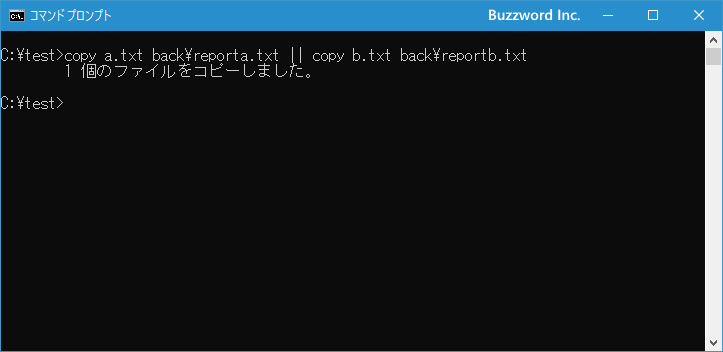

複数のコマンドを続けて実行する
コマンドプロンプトでは複数のコマンドの実行を続けて実行するように記述することができます。またコマンドが正常に実行された場合だけ次のコマンドを実行するといった指定もできます。ここではコマンドプロンプトで複数のコマンドを続けて実行させる方法について解説します。
複数のコマンドを続けて実行する
複数のコマンドを続けて実行させたい場合には、「&」で区切って実行するコマンドを記述します。
コマンド1 & コマンド2
この時、リダイレクトやパイプなどのように標準入力や標準出力に関する特別な処理は行われず、単に記述したコマンドを左から順に実行していくだけです。よって、次のように順番に実行した場合と違いはありません。
コマンド名1
コマンド名2
また2つ以上のコマンドを続けて実行したい場合には、同じように「&」を間に挟んで続けて記述して下さい。
コマンド名1 & コマンド名2 & コマンド名3 & コマンド名4
では例として次の2つのコマンドを続けて実行してみます。
cd test & copy *.txt c:\test\back
実行すると最初に「test」ディレクトリへ移動し、次に「test」ディレクトリ内の拡張子が「.txt」のファイルは「back」ディレクトリへコピーします。実際に実行した結果は次の通りです。
ディレクトリの移動とファイルのコピーが順に実行されました。
コマンドの実行が成功したら次のコマンドを実行する
単に続けてコマンドを実行するのではなく、最初のコマンドの実行が成功した時だけ次のコマンドを実行することができます。次のように記述します。
コマンド1 && コマンド2
コマンド1が成功した場合だけコマンド2が実行されます。
例として次の2つのコマンドを続けて実行してみます。
copy a.txt back && copy b.txt back
実行すると最初に「a.txt」ファイルをコピーし、コピーに成功した場合は続けて「b.txt」をコピーします。実際に実行した結果は次の通りです。

最初のファイルのコピーに成功したので、次のファイルのコピーも実行しています。
コピー先のファイルを確認してみると2つのファイルがコピーされているのが確認できます。
では次に「a.txt」ファイルを削除してから先ほどと同じものをもう一度実行してみます。
copy a.txt back && copy b.txt back
今度は最初のファイルのコピーに失敗したので、次のファイルのコピーは実行していません。
このように最初のコマンドの実行に成功した場合だけ次のコマンドを実行するように記述することができます。
コマンドの実行が失敗したら次のコマンドを実行する
先程とは逆に、最初のコマンドの実行が失敗した時だけ次のコマンドを実行することができます。次のように記述します。
コマンド1 || コマンド2
コマンド1が失敗した場合だけコマンド2が実行されます。
例として次の2つのコマンドを続けて実行してみます。
copy a.txt back\reporta.txt || copy b.txt back\reportb.txt
実行すると「a.txt」のコピーに成功したのでそこで終了しています。実際に実行した結果は次の通りです。

コピー先のファイルを確認してみると「reporta.txt」だけが存在しているのが確認できます。
では次に「a.txt」ファイルを削除してから先ほどと同じものをもう一度実行してみます。
copy a.txt back\reporta.txt || copy b.txt back\reportb.txt
今度は「a.txt」ファイルのコピーに失敗したので、次の「b.txt」ファイルのコピーを実行しています。
コピー先のファイルを確認してみると「reportb.txt」が存在しているのが確認できます。
このように最初のコマンドの実行に失敗した場合だけ次のコマンドを実行するように記述することができます。
-- --
コマンドプロンプトで複数のコマンドを続けて実行する方法について解説しました。
( Written by Tatsuo Ikura )

著者 / TATSUO IKURA
初心者～中級者の方を対象としたプログラミング方法や開発環境の構築の解説を行うサイトの運営を行っています。